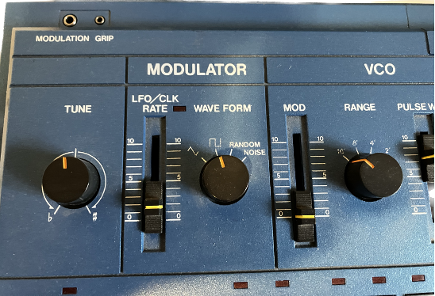

In the left panel, you can see a sine wave with frequency 440 Hz.
Click on the Play Original button at the bottom left to hear how it sounds.
In the right panel, a vertical line at 440 Hz represents the sine wave frequency component.
Remember that a sine (or a cosine) wave has only one frequency component,
in other words, it represents a simple harmonic motion such as the motion of an ideal pendulum or a tuning fork.
Now use the top right slider.
With the parameters loaded with the application
(Odd harmonics, 1/x amplitude),
add 10 components (harmonics) to the original sine wave.
You can get the same effect by typing 10 in the top right
box and pressing the Update button. Describe what happens
in the left panel.
If you add more components (say, 20), what do you see happening in the left panel?
Now, what do you see when using 20 harmonics and changing the amplitude values to 1/x2?
If you go back to 1/x, change Odd to All, and press the Update button, what happens? Remember that now your highest frequency will be half of the one with only Odd harmonics.
To get a similar maximum frequency value you’ll need to add 40 harmonics in this case.
You have just played with approximations of the most
common waves used in analog syntehsizers: square, triangular, and sawtooth waves.

Click again on the Play Original button at the bottom left to hear how they sound. Add and remove
partials and check the resulting visuals and sounds.
You can also play with these variable and see the results in both panels and hear the results.
For instance, describe what do you hear when using 20 Even harmonics with flat amplitude?
Compare the sonic result to using 20 Odd harmonics and flat amplitude.